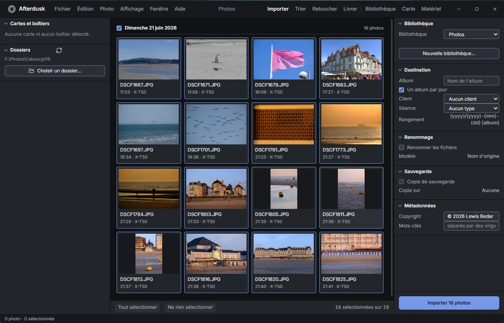

01
Import without losing a thing
Insert the card: Afterdusk recognises it and offers to import. Every file is copied, verified, renamed and filed by date and album, with a second copy on another drive if you want one.
Nothing is ever written to the card. Photos already imported are greyed out, and a camera sending its photos over Wi-Fi sees them arrive during the shoot.
